การใช้ซอฟต์แวร์ Geany เพื่อการเขียนโปรแกรมภาษา C/C++ สำหรับระบบปฏิบัติการ Linux#
▷ Geany Editor#
ในปัจจุบันมีตัวเลือกที่เป็นซอฟต์แวร์ประเภท IDE สำหรับการเขียนโค้ดด้วยภาษา C/C++ เช่น
- Microsoft Visual Studio Code IDE
- JetBrains CLion IDE
- Eclipse IDE + CDT
- Codeblocks
- Geany Editor
ในบทความนี้จะกล่าวถึง การติดตั้งและใช้งาน Geany Editor (https://geany.org/) ซึ่งเป็นซอฟต์แวร์ประเภท Light-weight, Open Source, Cross-platform, GTK-based IDE (Integrated Development Environment) นำมาติดตั้งใช้งานได้กับ Windows, Linux, Mac OS X เพื่อใช้ในการเขียนโค้ดด้วยภาษาคอมพิวเตอร์ เช่น C/C++ และได้อีกหลายภาษา
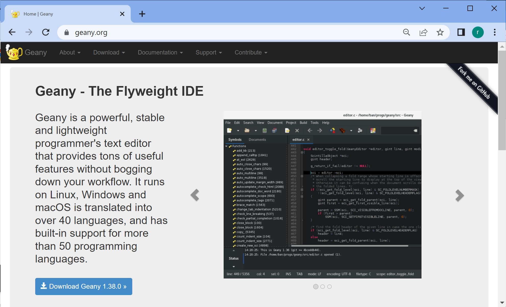
รูป: Geany.org
Geany เป็นซอฟต์แวร์ประเภท Code Editor / IDE เหมาะสำหรับผู้เริ่มต้นใช้งานและฝึกเขียนโค้ดภาษา C/C++ เช่น สำหรับผู้ใช้งานบอร์ด Raspberry Pi ร่วมกับระบบปฏิบัติการ Raspbian OS
Geany อ่านออกเสียงว่า "jee-nee" (จีน-นี) แต่เนื่องจากผู้พัฒนาคนแรกนั้นเป็นชาวเยอรมัน การออกเสียงจึงน่าจะเหมือนคำในภาษาเยอรมันว่า Genie ที่แปลว่า genius ในภาษาอังกฤษ
Geany มีส่วนเสริม หรือ Plug-ins ที่นำมาติดตั้งเพิ่มได้ เช่น Code Navigator และ Source-Level Debugger ซึ่งช่วยให้ผู้ใช้สามารถดีบักการทำงานของโค้ด โดยใช้โปรแกรม GDB (The GNU Project Debugger) เช่น สามารถกำหนดตำแหน่งที่เป็นบรรทัดต่าง ๆ ในโค้ด เรียกว่า บรรทัดที่หยุดชั่วคราว หรือ Breakpoints และเมื่อทำคำสั่งมาถึงตำแหน่งดังกล่าว ก็จะหยุดชั่วคราว และดูการเปลี่ยนแปลงค่าของตัวแปรในขณะนั้นได้ หรือจะให้ทำคำสั่งไปทีละบรรทัดในโค้ดก็ได้
▷ Build Geany from Source Code#
โดยปรกติแล้ว ถ้าใช้ Ubuntu หรือ Raspbian OS ก็สามารถติดตั้ง Geany Editor และ Plugins ได้ โดยใช้คำสั่งต่อไปนี้ (ดูวิธีการติดตั้งได้จาก https://plugins.geany.org/install.html
sudo apt install -y geany geany-plugins
แต่ในบทความนี้ จะแนะนำให้ลองเรียนรู้ขั้นตอนการคอมไพล์โค้ดจากซอร์สโค้ดของ Geany Editor และ Geany Plugins ซึ่งจะต้องเลือกเวอร์ชันให้ตรงกันด้วย และเวอร์ชันของ Geany ล่าสุดที่ได้ลองใช้ในการเขียนบทความนี้คือ v1.38
เนื่องจากจะต้องมีการทำคำสั่งหลายคำสั่งใน Bash Shell ดังนั้นเพื่อความสะดวก จึงได้จัดทำไฟล์ชื่อ install_geany.sh ซึ่งเป็น Bash Script File
สำหรับวัตถุประสงค์ดังกล่าว
File: install_geany.sh (Click to download)
#!/usr/bin/env bash
# set the version of Geany
GEANY_VERSION=1.38
if [ -x $(command -v geany) ]; then
echo "uninstall geany..."
sudo apt remove -y --purge geany geany-common geany-plugins
fi
if ! [ -x $(command -v wget) ]; then
echo "install wget"
sudo apt install -y wget
fi
# install necessary packages to build Geany from sourcecode
sudo apt install -y build-essential automake autoconf \
pkg-config intltool libgtk-3-dev libvte-2.91-dev \
gdb cppcheck
#-------------------------------------------------------
# set the URL
URL=https://download.geany.org
# set the filename of the GEANY archive file
ARCHIVE_FILE=geany-${GEANY_VERSION}.tar.gz
# download the archive file of Geany source code (.tar.gz)
result=$(wget -c ${URL}/${ARCHIVE_FILE} -O ${ARCHIVE_FILE})
if [ $? -ne 0 ] || ! [ -f ${ARCHIVE_FILE} ]; then
echo "Cannot download ${ARCHIVE_FILE} or file doesn't exist!"
exit -1
fi
# extract the compressed archive file
tar xvfz ${ARCHIVE_FILE}
# change the working directory
cd geany-${GEANY_VERSION}/
# configure and build the source code
result=$(./configure && make -j 4)
if [ $? -ne 0 ]; then
"Geany: configure or make failed"
exit -1
fi
# install the binary file of Geany
sudo make install
# remove the sourcecode directory
rm -fr geany-${GEANY_VERSION}
#-------------------------------------------------------
# set the filename of the GEANY-plugins archive file
ARCHIVE_FILE=geany-plugins-${GEANY_VERSION}.tar.gz
# set the URL
URL=https://plugins.geany.org/geany-plugins
# download the source code .tar.gz file
result=$(wget ${URL}/${ARCHIVE_FILE} -O ${ARCHIVE_FILE})
if [ $? -ne 0 ] || ! [ -f ${ARCHIVE_FILE} ]; then
echo "Cannot download ${ARCHIVE_FILE} or file doesn't exist!"
exit -1
fi
# extract the compressed archive file
tar xvfz ${ARCHIVE_FILE}
# change the working directory
cd ./geany-plugins-${GEANY_VERSION}
# configure and build the source code
result=$(./configure --enable-debugger && make -j 4)
if [ $? -ne 0 ]; then
"Geany-plugins: configure or make failed"
exit -1
fi
# install the shared lib files for Geany plugins
sudo make install
# reload the configuration files under /etc/ld.so.conf.d/
sudo ldconfig -v
# remove the sourcecode directory
rm -fr ./geany-plugins-${GEANY_VERSION}
#-------------------------------------------------------
echo "Done..."
เมื่อได้ดาวน์โหลดไฟล์ install_geany.sh มาแล้ว ให้เปลี่ยนโหมดของไฟล์เป็น Executable File
โดยทำคำสั่งต่อไปนี้ แล้วจึงเรียกใช้เพื่อทำขั้นตอนการติดตั้ง
$ chmod +x ./install_geany.sh
$ ./install_geany.sh
ในบทความนี้ได้ทดลองติดตั้งใน Ubuntu Desktop 22.04 LTS ที่ทำงานด้วย Virtual Machine (VM) โดยใช้ซอฟต์แวร์ Oracle VirtualBox และ Raspbian OS สำหรับบอร์ด Raspbery Pi Model 4B
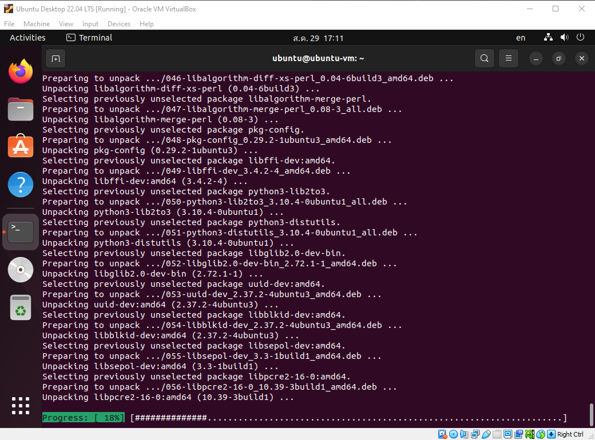
รูป: แสดงข้อความที่ปรากฎเมื่อทำขั้นตอนการติดตั้งใน Ubuntu Desktop และจะเห็นได้ว่า มีการดาวน์โหลดและติดตั้งแพ็กเกจต่าง ๆ จากอินเทอร์เน็ต
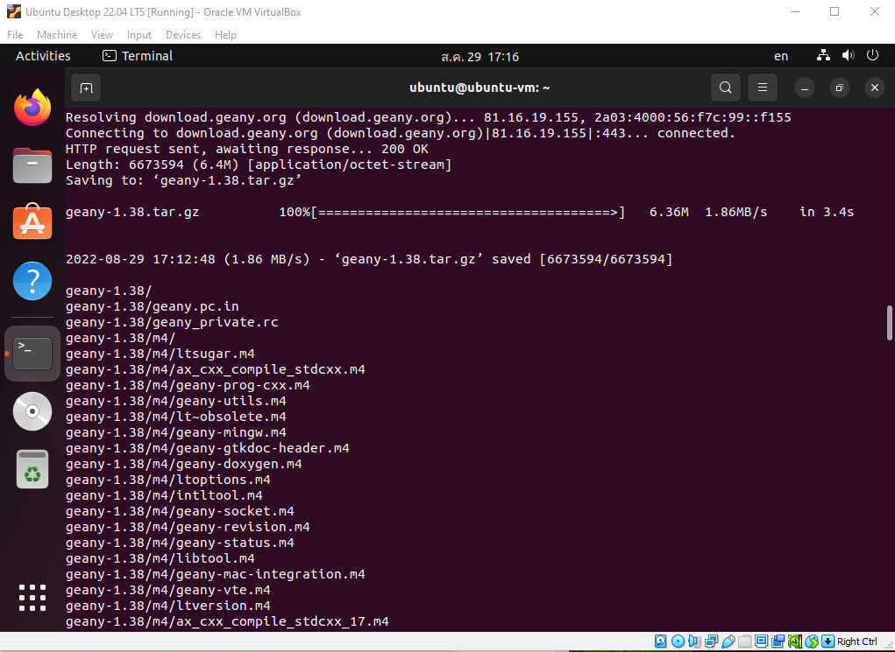
รูป: ข้อความเอาต์พุตในช่วงที่มีการดาวน์โหลดไฟล์ geany-v1.38.tar.gz
และแตกไฟล์ดังกล่าวในไดเรกทอรีใหม่
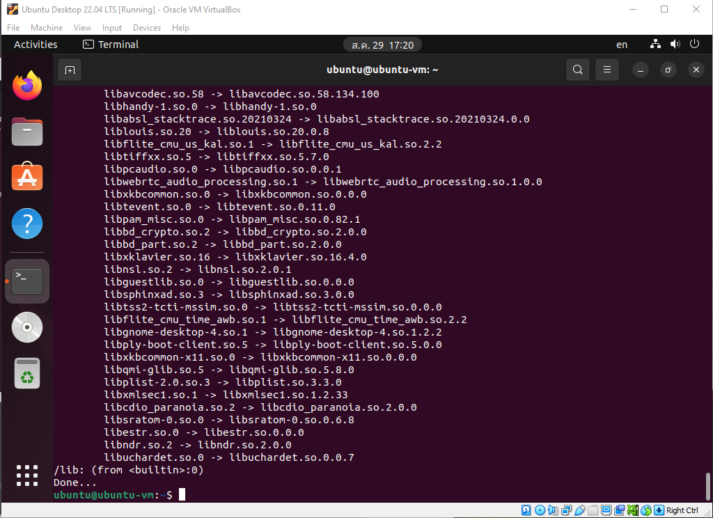
รูป: ข้อความเอาต์พุตในช่วงสุดท้าย เมื่อได้ติดตั้ง Geany และ Geany Plugins ในระบบได้สำเร็จแล้ว
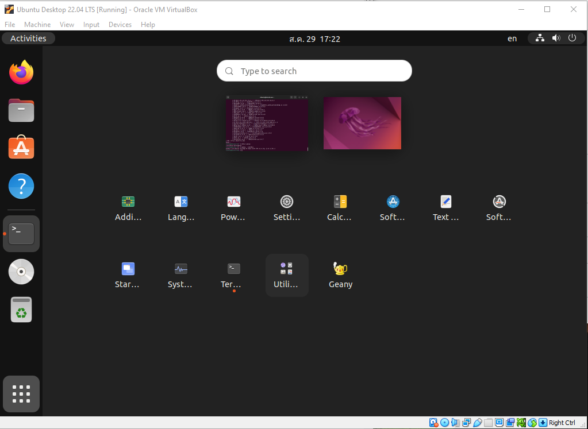
รูป: มีรูปสัญลักษณ์ Icon เพิ่มเข้ามา บนหน้า Ubuntu Desktop ทำให้เรียกใช้งานโปรแกรม Geany ได้สะดวก
การเรียกใช้ Geany ด้วยคำสั่งใน Bash Shell ก็ทำได้ดังนี้
(ข้อความใด ๆ ที่เกิดจากการทำงานของโปรแกรม และแสดงผ่านทาง stdout และ stderr
จะถูกส่งไปยังไฟล์ในระบบที่มีชื่อว่า /dev/null ดังนั้นจะไม่ปรากฏข้อความใด ๆ ให้ผู้ใช้เห็น)
$ geany --version
geany 1.38 (built on 2022-08-29 with GTK 3.24.33, GLib 2.72.1)
$ geany > /dev/null 2>&1 &
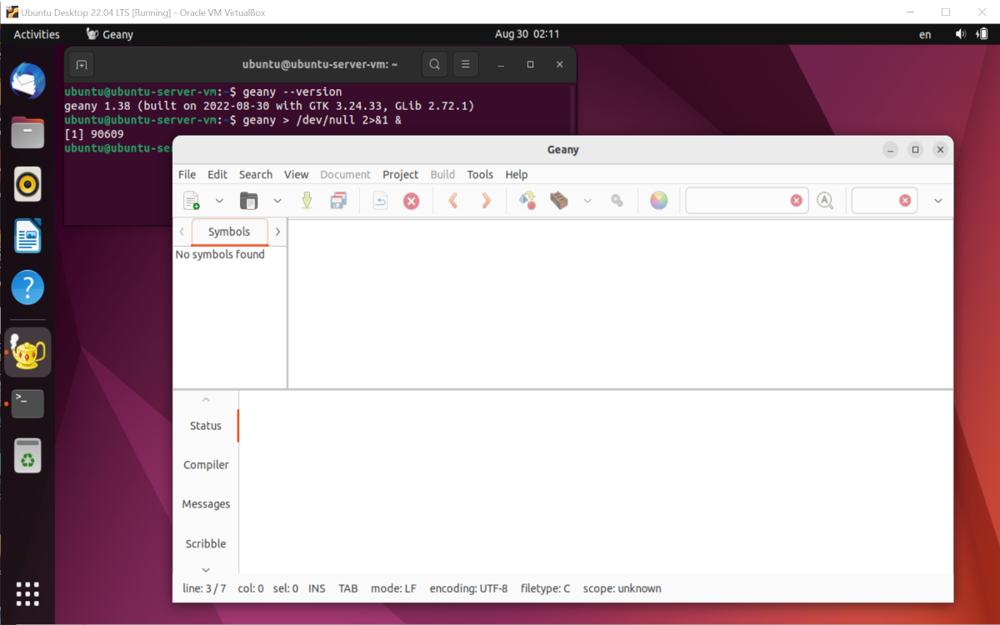
รูป: การเปิดใช้งาน Geany Editor ใน Ubuntu Desktop 22.04 LTS
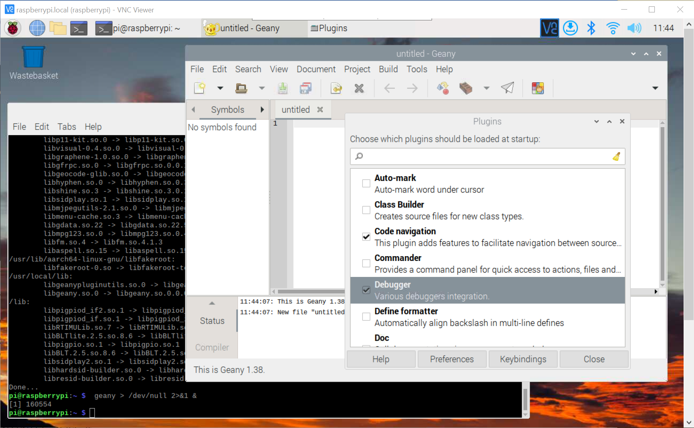
รูป: การเปิดใช้งาน Geany Editor ใน Raspbian OS (64-bit, Bullseye)
▷ การสร้างโปรเจกต์และดีบักโค้ดภาษาด้วย Geany Editor#
เมื่อเปิดใช้งาน Geany Editor ให้ไปที่เมนู File แล้วสร้างไฟล์ใหม่ hello.c หรือเปิดไฟล์ที่มีอยู่แล้ว
จากนั้นไปที่เมนู Build > Set Build Commands เพื่อตรวจสอบการตั้งค่าเพื่อเลือกใช้คำสั่งในการคอมไพล์โค้ด
(แบ่งเป็นคำสั่งสำหรับขั้นตอน Compile, Build, Lint) ตามรูปตัวอย่าง
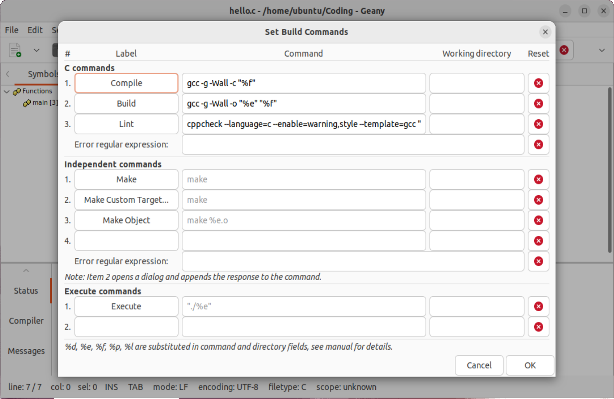
รูป: การตั้งค่าสำหรับ Set Build Commands (สังเกตว่า การใช้คำสั่ง gcc จะต้องมี -g
เพื่อระบุว่า เป็นการคอมไพล์โค้ดเพื่อใช้ในการดีบัก)
สำหรับขั้นตอนดีบักโค้ด ให้ไปที่เมนู Tools > Plugin Manager แล้วคลิกเลือกรายการ Debugger จากนั้นจะมี Tab ชื่อ Debug ในแนวตั้งทางซ้ายมือ
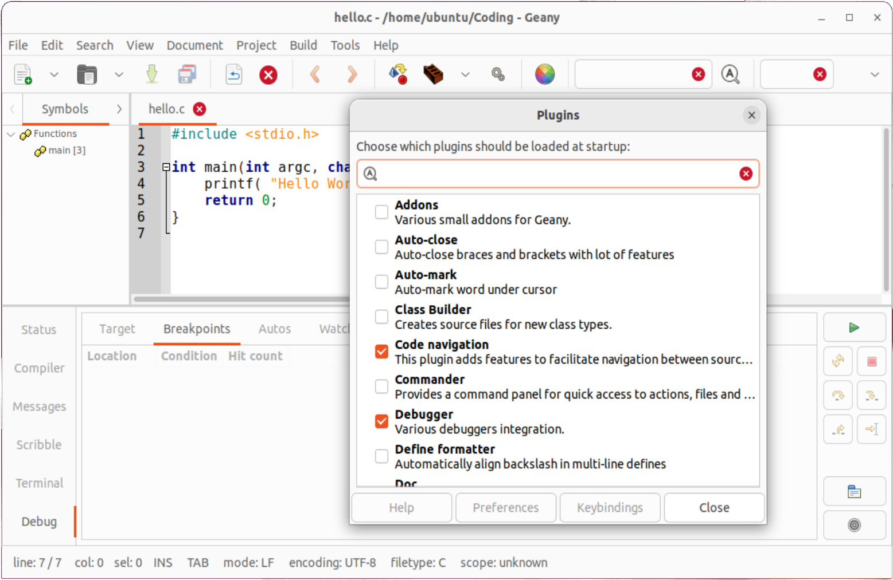
รูป: การเลือกใช้ Geany Debugger Plugin
ถัดไปเป็นโค้ดตัวอย่างภาษา C ให้ลองแก้ไขไฟล์ hell.c แล้วบันทึกการเปลี่ยนแปลง
จากนั้นทำคำสั่งจากเมนู Build > Build ซึ่งจะได้ไฟล์ hello
#include <stdio.h>
int main(int argc, char **argv) {
printf( "Hello World!\n" );
for ( int i=0; i < 10; i++ ) {
printf( "i = %d\n", i );
}
return 0;
}
จากนั้นให้คลิกเลือก Debug Tab ที่อยู่ทางซ้ายมือ แล้วไปที่ Target Tab
ในช่อง Target ให้ระบุที่อยู่ของไฟล์ hello ที่ได้จากขั้นตอน Build
(ให้ระบุชื่อเป็น Full path name) และเลือก GDB เป็น Debugger
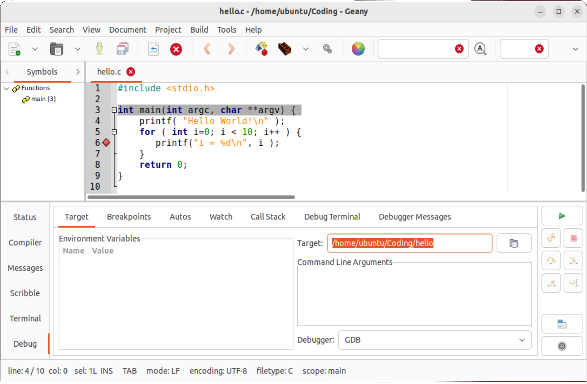
รูป: การตั้งค่าสำหรับการดีบักโค้ด เมื่อคอมไพล์โค้ด hello.c ได้แล้ว
ให้ลองคลิกเลือกเลขบรรทัดในไฟล์ hello.c เพื่อกำหนดตำแหน่ง Breakpoint
(สามารถมีได้หลายตำแหน่งในโค้ด) และให้สังเกตว่า หลังเลขบรรทัดจะมีสัญลักษณ์ Diamond แสดงกำกับเอาไว้
เมื่อกดปุ่มรัน (Run) เพื่อให้มีการรันโค้ด แต่จะมาหยุดชั่วคราวที่ตำแหน่ง Breakpoint หากมีการกำหนดเอาไว้ในโค้ด และก็สามารถทำคำสั่งต่อไป หรือทำทีละคำสั่งก็ได้ (ให้สังเกต กลุ่มของปุ่มต่าง ๆ ที่อยู่ทางด้านขวามือ) และในหน้าต่าง Debug Terminal จะมีข้อความเอาต์พุตที่ได้จากการทำงานของโปรแกรม
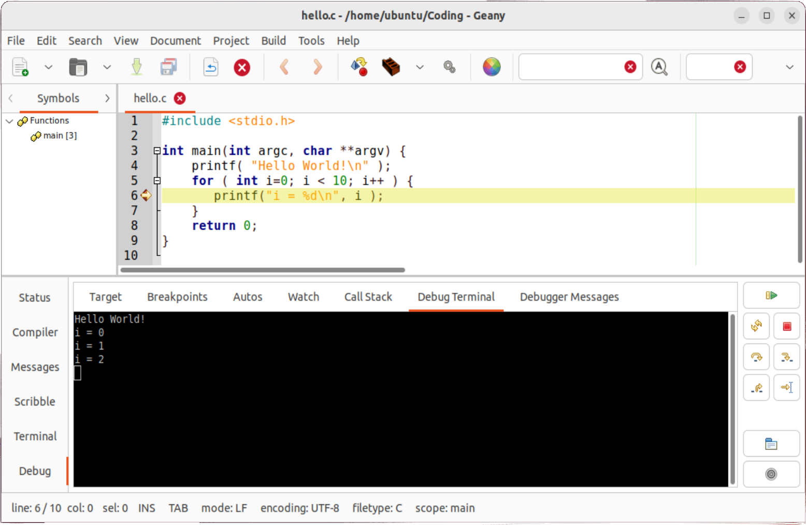
รูป: การดีบักโค้ดเมื่อมีการกำหนดตำแหน่ง Breakpoint
ซึ่งจะเห็นได้ว่า เมื่อรันโค้ด จะมีการหยุดตรงบรรทัดที่ 6 ในโค้ด hello.c
และมีข้อความเอาต์พุตการทำงานของโปรแกรม แสดงค่าของตัวแปร i ที่มีการเปลี่ยนแปลงเพิ่มขึ้น
จากการทำงานของประโยคคำสั่ง for
▷ การใช้งาน Makefile ร่วมกับ Geany Editor#
ในกรณีที่ซอร์สโค้ดของโปรเจกต์ประกอบด้วยไฟล์ .c และ .h หลาย ๆ ไฟล์ และต้องการจะใช้งานร่วมกับ
Geany Editor แนะนำให้สร้างไฟล์ที่เรียกว่า Makefile และเรียกใช้คำสั่ง
GNU Make สำหรับไฟล์ดังกล่าว
ถัดไปลองมาดูตัวอย่างโค้ด ซึ่งประกอบด้วยไฟล์ต่อไปนี้
ping.hเป็นไฟล์ที่มีประกาศรูปแบบของฟังก์ชัน ได้แก่exec_ping()และpipe_ping()เพื่อทำคำสั่งpingและจะมีการเรียกใช้ฟังก์ชันในไฟล์main.cping.cเป็นไฟล์ที่มีการสร้างฟังก์ชันตามที่ได้มีการประกาศไว้ในไฟล์ping.hmain.cมีฟังก์ชันmainที่มีการเรียกใช้ฟังก์ชันจากไฟล์ping.h
Zip file: ping-src.zip
File: ping.h
#ifndef __PING_H
#define __PING_H
#include <stdio.h> // for printf(), snprintf()
#include <stdlib.h> // for system()
int exec_ping( const char *cmd );
int pipe_ping( const char *cmd );
#endif
File: ping.c
#include "ping.h"
#define PING_BUF_LEN (128)
int exec_ping( const char *cmd ) {
if( cmd == NULL ) { return -1; }
int status = system( cmd ); // execute the ping command
return status >> 8; // status code divided by 256
}
int pipe_ping( const char *cmd ) {
if( cmd == NULL ) { return -1; }
char buf[ PING_BUF_LEN ];
FILE *fp;
// run the command and open the pipe
if ((fp = popen(cmd, "r")) == NULL) {
printf( "Error opening pipe!\n" );
return -1;
}
// read from pipe iine by line (limited by PING_BUF_LEN)
while (fgets(buf, PING_BUF_LEN, fp) != NULL) {
printf( "> %s", buf ); // show output from the ping command
}
// close the pipe
if ( pclose(fp) ) {
return -1; // command not found or exited with error
}
return 0; // status ok
}
File: main.c
#include <stdio.h> // for printf(), sprintf()
#include "ping.h" // for exec_ping(), pipe_ping()
int main( int argc, char **argv ) {
char cmd[32];
sprintf( cmd, "/usr/bin/ping %s -c %u", "8.8.8.8", 5 );
// send a ping packet to 8.8.8.8 (Google DNS server) 5 times
// Method 1)
if ( exec_ping( cmd ) != 0 ) {
printf( "PING command execution using system() failed!" );
}
// Method 2)
if ( pipe_ping( cmd ) != 0 ) {
printf( "PING command execution using popen() failed!" );
}
return 0;
}
ถ้าจะทำคำสั่งเพื่อคอมไพล์โค้ดใน Bash Shell ก็ทำได้ตามลำดับดังนี้
$ gcc -Wall -g -I. -c ping.c
$ gcc -Wall -g -I. -c main.c
$ gcc -Wall -g main.o ping.o -o main
ลองมาดูตัวอย่างการสร้างไฟล์ Makefile ที่ใช้สำหรับการคอมไพล์โค้ดของโปรเจกต์
File: Makefile
# use the GCC C compiler
CC=gcc
# enable compilation warning and turn on debug info
CFLAGS +=-std=gnu99 -Wall -Og -g3
# define source files (all .c files in the project directory)
SRCS = $(wildcard *.c)
# define object files
OBJ_FILES = $(SRCS:.c=.o)
# define Phony targets
.PHONY: all clean
all: main
@echo "done..."
main: $(OBJ_FILES)
$(CC) $(CFLAGS) $^ -o $@
%.o: %.c # use pattern rules
$(CC) $(CFLAGS) -c $<
clean:
rm -f *.o main
โดยทั่วไปแล้ว ภายใน Makefile จะมีการสร้างกฎ (Rule) สำหรับการทำคำสั่งต่าง ๆ
(เรียกว่า Action) และมีการประกาศตัวแปรได้ ( Variable Definitions)
เช่น CC และ CFLAGS เป็นต้น
กฎในแต่ละข้อ จะเริ่มต้นด้วยชื่อ (เรียกว่า Target Name) แล้วตามด้วย : เช่น all หรือ clean เป็นต้น
และอาจมีเงื่อนไขในการทำกฎแต่ละข้อได้ (เรียกว่า Condition หรือ Dependency) เขียนต่อท้ายไว้ในบรรทัดเดียวกัน และมีรายการคำสั่งที่เกี่ยวข้องในบรรทัดถัดไป มีได้หลายบรรทัด แต่ละบรรทัดจะต้องเริ่มด้วย Tab เท่านั้น
ยกตัวอย่างเช่น main เป็นชื่อ Target และมีเงื่อนไขว่า จะต้องมีไฟล์ .o ตามที่กำหนดไว้ในตัวแปร
$(OBJ_FILES) แต่ถ้ายังไม่มีไฟล์เหล่านั้น ให้ไปดำเนินการกับ Target ที่มีชื่อว่า %.o ก่อน
โดยที่ %.o หมายถึง ชื่อไฟล์ใด ๆ ที่ลงท้ายด้วย .o และจะได้จากการคอมไพล์ไฟล์ .c ที่มีชื่อตรงกัน
เมื่อสร้างไฟล์ Makefile แล้ว ก็สามารถเรียกใช้งานด้วยคำสั่ง make (GNU make) ได้ดังนี้
$ make clean && make
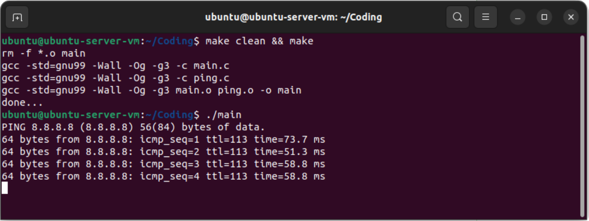
รูป: ตัวอย่างการรันคำสั่ง make โดยเรียกใช้ไฟล์ Makefile ตามตัวอย่าง
เมื่อได้สร้างไฟล์ Makefile และไฟล์สำหรับซอร์สโค้ดเป็นตัวอย่างแล้ว ถัดไปลองมาเรียกใช้จาก Geany Editor
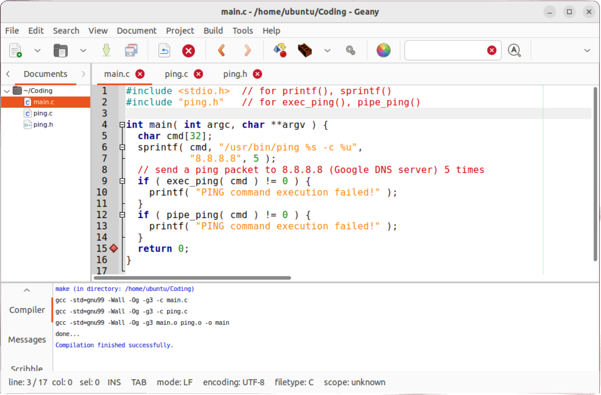
รูป: ตัวอย่างการรันคำสั่ง make ใน Geany จากเมนูคำสั่ง Build > Make
คำสั่งตรวจสอบรายการไฟล์ต่าง ๆ ในไดเรกทอรีของซอร์สโค้ด
$ tree -L 1
.
├── main.c
├── Makefile
├── ping.c
└── ping.h
0 directories, 4 files
และเมื่อทำคำสั่ง make แล้ว จะมีรายการไฟล์เพิ่มขึ้น
$ tree -L 1
.
├── main
├── main.c
├── main.o
├── Makefile
├── ping.c
├── ping.h
└── ping.o
0 directories, 7 files
▷ กล่าวสรุป#
บทความนี้ได้นำเสนอขั้นตอนการติดตั้งและใช้งาน Geany Editor สำหรับ Ubuntu Linux
(และ Raspbian OS) สาธิตการใช้งานเพื่อเขียนโค้ดภาษา C/C++ การคอมไพล์จากซอร์สโค้ด รวมถึงขั้นตอนการดีบักโค้ด
(Source-Level Debugging) และการสร้างไฟล์ Makefile เพื่อใช้กับคำสั่ง make
ในการคอมไพล์โค้ดที่มีหลายไฟล์ร่วมกับซอฟต์แวร์ Geany Editor
This work is licensed under a Creative Commons Attribution-ShareAlike 4.0 International License.
Created: 2022-08-29 | Last Updated: 2022-09-09